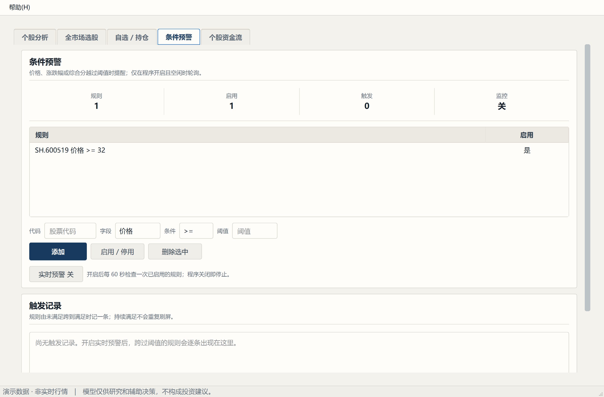

GUI 线程为什么碰不得网络、迟到结果如何丢弃、协作取消与总 deadline
label.setText(...)
可能当场崩溃，也可能"看起来能跑"然后在用户机器上偶发崩溃——后者更糟，因为它不可复现。
所以本项目的并发边界是死的：
GUI 线程 │ 工作线程（QThreadPool）
──────────────────┼──────────────────────────
页面、控件、模型 │ 取数、解析、算分
控制器（QObject） │ 纯 Python 对象，不碰任何 QWidget
▲ │
└── queued signal ──┘ ← 结果只能这样回来Qt 的信号槽在跨线程连接时默认是 queued connection：信号携带的参数被放进目标对象所在线程的 事件队列，由那个线程在自己的事件循环里调用槽函数。于是槽函数体内的代码天然运行在 GUI 线程， 可以安全操作控件。
用户分析股票 A，等得不耐烦，改成分析股票 B。A 的请求还在路上，B 先返回并渲染。 接着 A 姗姗来迟，把界面覆盖成 A 的数据——用户看到的是 B 的股票名配 A 的数据。
class GenerationGuard:
current: int # 只在 GUI 线程递增
def bump(self) -> int # 开新一轮：世代 +1，返回新世代号
def is_current(self, g) -> bool控制器 start():
cancel, gen = self._begin() # 世代 +1，拿到本轮世代号
worker = Worker(..., gen, ...) # 世代号随 worker 走
worker 完成 → 信号回 GUI 线程 → 槽里第一件事：
if not self._is_current(gen): return # 上一代的结果，直接丢弃int 快照。整个机制不需要锁——把可变状态限制在单线程内，
比加锁更简单也更不容易出错。
| 动作 | 世代是否 +1 | 为什么 |
|---|---|---|
| 用户点「停止」 | 否 | 这一轮仍要交付它的「已取消」终态，好让界面把按钮复位、状态写清楚 |
| 用户再次点「开始」 | 是 | 新一轮 supersede 旧一轮，旧结果不再需要 |
清空与停止也不同：停止仍要接收本轮终态，清空则表示不再展示本轮任何结果；必须防止已排队的结果或完成信号把表格、概览和详情重新填回来。测试应主动交付这些迟到信号，而不是靠等待一段时间猜它们不会出现。
点了「停止」，界面按钮变灰了，但程序还在跑。关窗时更明显——窗口消失了，进程还赖着不退。
for symbol in symbols:
if cancel.is_cancelled(): break # ← 只有这里检查
fetch(symbol) # ← 这一步本身可能跑 100 秒早期实现里，单只股票的历史取数最坏要走 4 个数据源 × 3 次重试 × 8 秒 ≈ 100 秒， 且每个源各自重新获得完整的超时预算。这段时间里取消完全不起作用。
run_with_contract(attempts, deadline=..., cancel_token=...):
for label, call in attempts:
if cancel_token.is_cancelled(): return 已取消
if deadline.expired(): return 超时
...控制器开一轮时，把本轮的取消令牌绑给自己的 provider，于是令牌一翻，在途请求就会在下一个可中断点退出。
@dataclass(frozen=True)
class Deadline:
budget_seconds: float
started_at: float
clock: Callable[[], float] = time.monotonic # 注入时钟，测试不必真的 sleeptime.monotonic 而非 time.time：
单调时钟不受系统时间调整影响。时钟可注入，因此 deadline 相关的测试一秒都不用睡。

条件预警是一个 QTimer 每 60 秒跑一轮。如果某一轮因为网络慢跑了 90 秒会怎样？
定时器不会等它——第二轮、第三轮照常提交，多个周期重叠在跑。
预警是边沿触发的（条件由假变真才提醒，持续为真不重复刷屏），它靠一个 fired 集合记住
「哪些规则已经响过」。重叠的周期各自拿着同一份旧快照出发，于是同一条预警每轮都会重新触发；
更糟的是它们完成时会互相覆盖 fired 状态。
def _tick(self):
if self._in_flight: # 上一轮还没跑完
return # 跳过这一拍
self._in_flight = True
...提交 worker...
def _on_cycle_done(...):
if 不是当前世代 or 已停止: return
self._in_flight = False # 当前代这一轮结束，放行下一拍closeEvent → 先给所有控制器请求取消
共用最多 5000 ms 的等待预算
检查 waitForDone() 返回值
未排空：保留窗口与 worker 对象，提示正在停止
通过定时器继续检查，排空后才真正关闭QThreadPool 的析构函数会无限期阻塞直到任务结束——那就是「关不掉的窗口」。
BacktestController 只读取已经取得的历史日线，不持有 provider、不联网。它保留一项正在计算的工作和一项最新等待选择；快速切换标的或档位时不把每次点击都排成队。
报告按本批次的「规范化标的 + 档位」缓存，最多保存 150 项；换批或清空时清缓存并递增代次。纯函数 backtest_steps 每处理一个历史样本便让出控制权，worker 在样本之间检查取消；领域内核不依赖 Qt 或线程。旧计算即使正在结束，迟到报告也不再交付。修改本金只影响仓位，不影响回测。测试应覆盖缓存命中、最新等待选择、换批作废和当前选择匹配。
| 要验证的性质 | 怎么写成确定性测试 |
|---|---|
| 迟到结果被丢弃 | 手工构造两轮，让第一轮的完成信号在第二轮开始之后才发，断言界面状态属于第二轮 |
| 取消交付「已取消」终态 | 取消后等待完成信号，断言终态标志而不是断言"没有信号" |
| deadline 生效 | 注入假时钟，手工推进时间，断言超时分支——不 sleep |
| 取消真的到达传输层 | 用 spy provider 记录被绑上来的令牌，断言 cancel() 后它确实被翻转 |
| 跨控制器不误伤 | 取消 A，断言 B 的令牌未被翻转 |